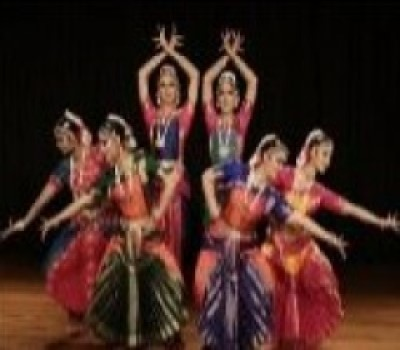
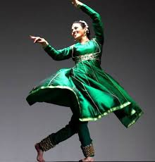
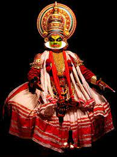
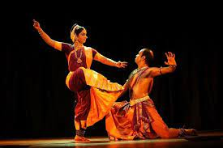
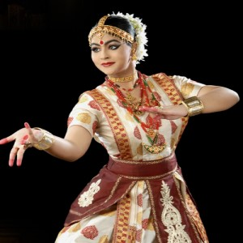
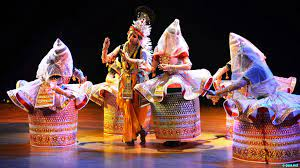
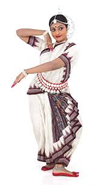

भारत में आठ प्रसिद्ध शास्त्रीय नृत्य होते हैं । भारत के आठ प्रसिद्ध शास्त्रीय नृत्य कलाएं हैं -भरतनाट्यम, कथक, कथकली, कुचिपुड़ी, सत्त्रिया मणिपुरी, ओडिसी और मोहिनीअट्टम ।
1) भरतनाट्यम:
भरतनाट्य नृत्य कला शैली का विकास तमिलनाडू राज्य में हुआ है। इस का नाम करण भरतमुनि एवं नाट्य शब्द से मिल कर बना है। तमिल में नाट्य शब्द का अर्थ नृत्य होता है। भरतनाट्य को भारत के अन्य शास्र्तीय नृत्य की जननी कहा जाता है। भरतनाट्य तमिलनाडू में तंजोर जिले के एक हिन्दू मंदिर उत्पतित हुआ था, एवं इस देवदासी ने विकसित किया था। यह नृत्य मुख्य रूप से महिला द्वारा किया जाने वाला नृत्य है। भरतनाट्य को एकहरी कहते है, क्योकि यह नृत्य दौरान एक ही नर्तकी अनेक भूमिकाए प्रस्तुत करती है।
भरतनाट्य के कलाकार- रुक्मिणी देवी अरुंडेल

2) कथक:
कथक नृत्य उत्तर भारत का बहुत ही प्रसिद्ध नृत्य माना जाता है। कथक शब्द की उत्पति कथा से हुई है, जिसका अर्थ कहानी होता है। कथक की शैली का जन्म ब्राह्मण द्वारा हिंडो की परंपरा की पुन गणना में निहित है। मुग़ल शासन युग में कथक बहुत ही प्रसिद्ध नृत्य हुआ करता था। कथक में हिन्दू धार्मिक कथाओ के अलावा पर्श्याँ और उर्दू कविता से नाट्य प्रस्तुत होता है। कथक का जन्म उतर में हुआ था लेकिन पर्शयन एवं मुस्लिम प्रभाव से यह कला मंदिर की रित से दरबारी मनोरंजन तक पहुच गई थी।
कथक के कलाकार- पंडित बिरजू महाराज

3) कथकली:
कथकली नृत्य दक्षिण भारत के केरल से सबंधित नृत्य है। यह शास्त्रीय नृत्य का मुख्य नृत्य माना जाता है। कथकली शब्द अर्थ है, “नृत्य/नाटक होता है”। कथ का अर्थ कहानी होता है एवं कलि का अर्थ प्र्दशन एवं कला होता है। कथकली अपने शृंगार और वेशभूषा के कारण ही एक अलग पहचान बनी है। इस नृत्य में ज्यादातर महाभारत, रामायण और पुराणिक कथाओ को नृत्य के र्रूप में प्रस्तुत किया जाता है। कथकली नृत्य समान्यतोर पर पुरुषो द्वारा किया जाने वाला नृत्य है।कथकली एक द्द्रश्यत्माक कला है। जिनका शृंगार एवं वेशभूषा नाट्य शास्त्र के नियम पर आधारित होता है।
कथकली के कलाकार- गुरुगोपालशंकर

4) कुचिपुड़ी:
आन्ध्र प्रदेश का सुप्रसिद्ध नृत्य कुचिपुड़ी है। यह नृत्य पुरे दक्षिण भारत में प्रख्यात है। कुचिपुड़ी का जन्म आधुनिक आंध्रप्रदेश के कृष्ण जुले में हुआ था। कुचिपुड़ी नर्तक पुरुष ही होते है। ये ब्राह्मण परिवार कुचीपुडी के भागवतथालू कहे जाते थे। कुचीपुडी के भागवतथालू ब्राह्मणों का प्रथम समूह 1502 वर्ष ए. डी. का निर्माण किया गया था। लेकिन अब इस नृत्य को महिला भी करती है।कुचिपुड़ी में पानी भरे मटके को सर पर रखकर पीतल की थाली में नृत्य करना बेहद लोकप्रिय है।
कुचिपुड़ी नृत्य के कलाकार- लक्ष्मी नारायण शास्त्री और स्वप्न सुंदरी

5) सत्रीया:
यह नृत्य असम का एक शास्त्रीय नृत्य है, इस नृत्य का निर्माण महान संत श्रीमंत शंकरदेव थे। यह नृत्य असम के वैष्णव मठो में होता था, इस लिए इस नृत्य को स्त्रोत के नाम से जाना जाता है। पहले यह नृत्य पुरुष ही करते थे लेकिन अब यह नृत्य महिला नर्तकी द्वारा भी किया जाता है। सत्त्रिय नृत्य को भारत के शास्त्रीय नृत्य के रूप में मान्यता मिल है।सत्त्रिय शब्द का अर्थ सत्तर शब्द स्तर से लिया गया है, जिसका अर्थ मठ और नृत्य का अर्थ है, तरीका।
सत्त्रिय नृत्य के कलाकार- आनंद मोहन भगवती और गुरु इंदिरा पीपी बोरा

6) मणिपुरी:
यह नृत्य मणिपुर राज्य का शास्त्रीय नृत्य है। इस नृत्य की उत्पति पाणीपुर में हुई है। मणिपुरी नृत्य जगोई के नाम से भी जाना जाता है। मणिपुरी नृत्य मुख्य रूपसे राधा कृष्ण के प्रेम पर आधारित है।इस नृत्य में भगवन विष्णु की जवान कथा को प्रस्तुत किया जाता है।इस नृत्य को कोमल एवं शक्तिशाली रूप में व्यक्त किया जाता है। मणिपुरी नृत्य भारत के अन्य नृत्य से अलग है, क्योकि इस नृत्य रूप में शरीर की गति धीमी होती है। मणिपुरी नृत्य मंदिर प्रांगणों में पूरी रात चलने वाला नृत्य होता है।
मणिपुरी नृत्य के कलाकार- गुरु निलामधब मुखर्जी

7) ओडिसी:
ओडिसी शास्त्रीय नृत्य सबसे प्राचीन नृत्य में से एक माना जाता है। यह नृत्य प्राचीनकाल में स्त्रियों द्वारा किआ गया है। यह नृत्य हिन्दू मंदिर में हुआ था। ब्रह्मेश्वर के शिलालेख में ओड़िसा नृत्य का वर्णन किया गया है। ओडिसी नृत्य के ऐतिहासिक प्रमाण कोर्णाक, पूरी एवं भवनेश्वर मंदिर जैसे प्राचीन स्थल पर पाए गए है। किसी अन्य भारतीय शास्त्रीय नृत्य रूप के समान ओड़िसी के दो प्रमुख पक्ष हैं: नृत्य या गैर निरुपण नृत्य, जहां अंतरिक्ष और समय में शरीर की भंगिमाओं का उपयोग करते हुए सजावटी पैटर्न सृजित किए जाते हैं।
ओडिसी नृत्य के कलाकार- संजुक्ता पाणिग्रही
